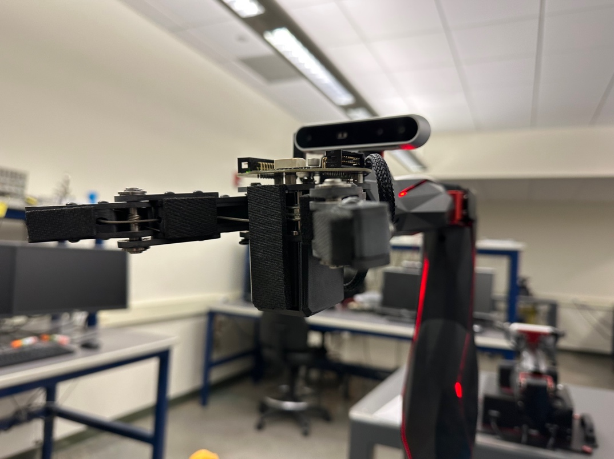

Summary
The original idea was a robotic color segregator, but the scope was expanded into a tic-tac-toe playing robot after feedback that the initial concept was too simple. The final system uses the QArm and its RGB camera to detect the board and piece states, then place the robot's next move based on the current game state. The result combines robotic movement, camera-based detection, and game logic in one platform.
Quanser QArm articulated serial manipulator.
Camera-based board and token detection for gameplay state recognition.
Turn-based strategy algorithm used to choose the robot's best move.
Blue tokens for the human player and gold tokens for the robot.
Project team
Erik Heuchert
Contributed to the ME 423 QArm tic-tac-toe final project.
Lucas Heuchert
Contributed to the ME 423 QArm tic-tac-toe final project.
Jacky Liang
Contributed to the ME 423 QArm tic-tac-toe final project.
John Tomas
Contributed to the ME 423 QArm tic-tac-toe final project.
Matthew Moore
Contributed to the ME 423 QArm tic-tac-toe final project.
Embedded video demo
Why this version is stronger
Compared with the original sorting concept, tic-tac-toe introduced more mechatronics depth. The robot had to perceive board state, solve game logic, and execute precise pick-and-place operations without disturbing existing pieces. That made the final design more interactive and much better aligned with the course goals.
The report emphasizes the project as a blend of mechanics, controls, computer vision, and programming rather than a single-function pick-and-place demo.
System overview
Robot platform
The QArm provides a 4 degree-of-freedom roll-pitch-pitch-roll arm with a gripper and RGB-D camera, which is a strong fit for repeatable grasping and placement.
Vision stack
OpenCV-based color masking, contour detection, and centroid extraction were used to detect tokens and infer the board state from the RGB camera feed.
Decision logic
A minimax-based game algorithm evaluates the board and selects the robot's next move while helper functions update moves, detect winners, and handle draws.
Project repository
The report appendix lists the project GitHub repository used for the codebase and implementation files.
